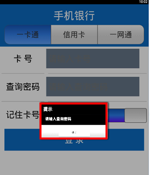
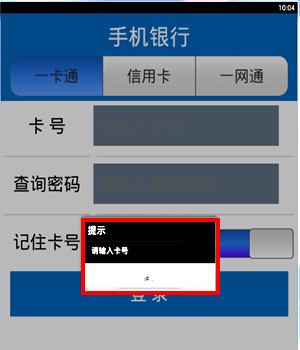
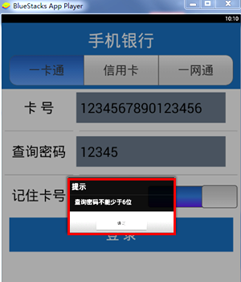
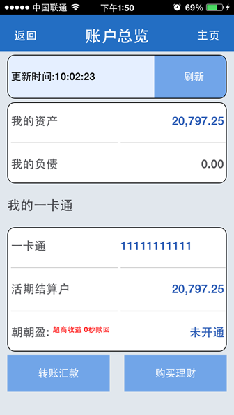
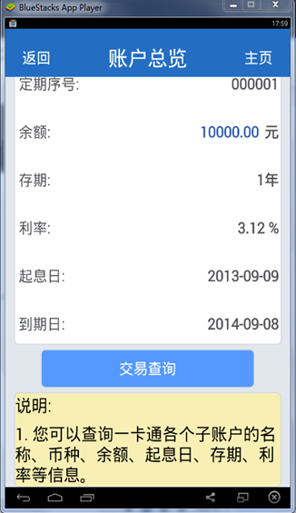

界面开发综合例子
1 实例一：登陆界面
2. 运行效果图：

3.界面布局简述：
由示例代码以及运行效果图可知，本界面包含：
4个label标签，分别为“手机银行”、“卡号”、“查询密码”、“记住卡号”；
一个segment控件，其三个选项分别为“一卡通”、“信用卡”、“一网通”，且在默认情况下“一卡通”为checked状态。用户可以根据需求选择其他选项；
两个文本域控件（Input:text），分别用来输入密码（password）和卡号(cardNo)；
一个选择控件switch，默认状态为“开”；
一个5行2列的table。其中1、3、5行的第一列分别盛放“卡号”、“查询密码”、“记住卡号”三个标签，第二列分别盛放密码（password）、卡号(cardNo)两个文本域控件及一个选择控件switch；
一个button按钮为登录按钮。当点击“登录”按钮时触发login()事件。
4.界面所实现的功能：
判断卡号和查询密码是否输入。
判断卡号和查询密码的长度是否在规定长度范围之内。
4.1登陆界面实现方式简述：
用户点击“登录”按钮时触发login()事件，即首先判断卡号和查询密码是否输入，若未输入则提示用户“请输入查询密码”或“请输入卡号”；然后校验卡号与密码的输入长度，若长度不在规定范围之内则根据相应情况作出提示。
具体代码以及运行情况如下：
代码片段1:判断卡号与查询密码是否输入
function login()
local cardNo = check_input("cardNo","卡号");
local password = check_input("password","查询密码");
if cardNo == nil or password == nil then
return
end;
check_length(cardNo,20,15,"卡号");
check_length(password,14,6,"查询密码");
end
-- 判断控件值
function check_input(ctrlName,msg)
local ctrl = get_ctrl(ctrlName);
local ctrlValue;
ctrlValue = ctrl[1]:getPropertyByName("value");
if ctrlValue == nil or ctrlValue == "" then
window:alert("请输入"..msg);
return;
else
return ctrlValue;
end
end;
效果图:
 
代码片段2:判断输入长度
function check_length(value,maxlength,minlength,msg)
local length = string.len(value);
if length > maxlength then
window:alert(msg.."不能多于"..maxlength.."位");
return;
end;
if length < minlength then
window:alert(msg.."不能少于"..minlength.."位");
return;
end;
end;
效果图:
 
同理，当查询密码或卡号的输入长度大于规定值时会相应的提示“查询密码不能多于maxlength位”或“卡号不能多于maxlength位”！
2 实例二：账户总览界面
本章节中该实例的界面为完全静态界面，即该界面展示的所有数据都是在报文中写定的，而非根据用户需求进行动态获取的。且它以table的形式分别展示了时间、我的资产、我的负债及我的一卡通的信息，其中我的一卡通的信息包含一卡通的卡号、活期结算户、朝朝盈。
1. 账户总览界面示例代码：account_overview.xml
2. 运行效果图：

3. 此界面还有一些需要实现的地方：
初始化界面时更新时间取当前最新时间。
初始化界面时账号和账号信息等为动态获取数据。
界面中选择不同的账号时变化账号详细信息。
(这些功能我们会在后面讲解动态界面中一一实现。)
3 实例三：账户详情界面
与账户总览界面一样账户详情界面也是完全的静态界面，它也以table的形式静态的展示了“当前一卡通”、“活期结算明细”、‘“定期信息”三部分内容。其中“当前一卡通”只显示了一卡通的卡号；“活期结算明细”显示了币种、余额、利率、状态四类信息；‘“定期信息”显示了定期序号、余额两类信息。
1. 账户详情界面示例代码：account_detail.xml
2. 运行效果图：

3.此界面还有需要实现的地方：
此界面为完全的静态界面，我们需要将此界面修改为动态界面。在后面动态界面中使用lua脚本使用此界面动态生成。